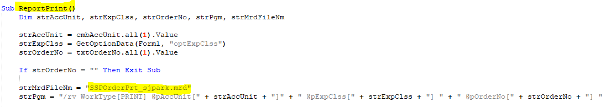
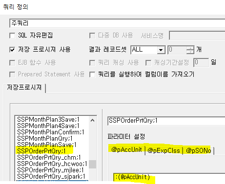
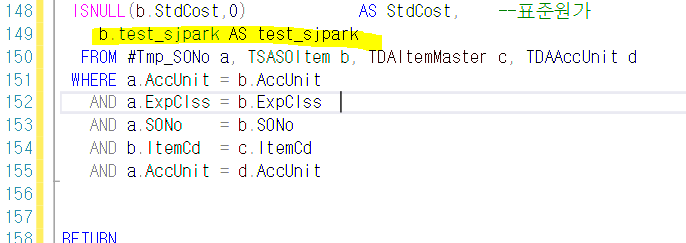
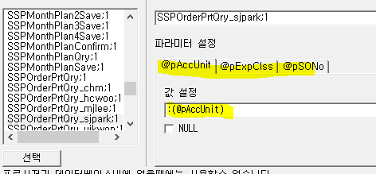

SP추가 (RD)
- 폼화면의 경우 sp명이 균일하지 않음
- aspx 수정
- ReportPrint()에서 확인
-
SSPOrderPrt.mrd => SSPOrderPrt_sjpark.mrd 로 변경
-
+. 쿼리도 확인 가능

-
SP명 찾기
-
출력물 실행 => 실행문에서 확인 (안뜰경우 b방법)
-
SSPOrderPrt가 포함된 쿼리 찾기 (3.0Editior) 데이터베이스 - 쿼리정의)
-
파라미터 복사 해놓기
-

-
SSPOrderPrtQry SP =>SSPOrderPrtQry_sjpark로 새로 만들기
-
표준에서 컬럼 (test_sjpark) 추가할 경우 => 마지막에 추가 (이미 테이블이 join되어 있기 때문에 추가만 하면된다 (alias 필수)

- 복사했던 파라미터 붙여넣기
